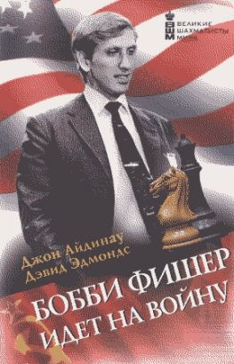

Бобби Фишер идет на войну
Вступление
С 1948 года в чемпионатах мира по шахматам доминировал Советский Союз. Москва утверждала, что победы свидетельствуют о превосходстве советской политической системы. Но вот появился Бобби Фишер. Эксцентричный гений, Фишер обладал уникальными данными для того, чтобы принять вызов Советов. Каждый час его жизни был посвящён игре. Он преодолел все препоны ради достижения чемпионства. Когда непредсказуемое поведение Фишера достигло апогея, ему позвонил Генри Киссинджер, убедив сражаться за свою страну. Против него вышел Спасский: сложный, тонкий игрок, не похожий на предыдущих советских чемпионов мира. Авторы выяснили, что, когда Спасский начал проигрывать, на сцену вступил КГБ[1]. Основанная на неопубликованных документах из архивов Советского Союза и США, эта удивительная история посвящена прошлому, политике и шахматам. А в основе её — человеческая драма, история блеска и триумфа, гордости и отчаяния. «Это действительно борьба свободного мира против лгущих, изворотливых, лицемерных русских... Сражение между мной и Спасским — микрокосм мировой политической ситуации. Они всегда говорят, что мировые лидеры должны вести борьбу лицом к лицу. Именно это мы и делаем — но без бомб, сражаясь на доске». Бобби Фишер, интервью Би-би-си, 1972
Действующие лица
Американцы

- Бобби Фишер, претендент на звание чемпиона мира
- Пал Бенко, гроссмейстер, предоставивший Фишеру возможность участвовать в чемпионате
- Роберт Бирн, гроссмейстер, соавтор Иво Нея в написании книги о матче
- Фред Крамер, главный помощник Фишера в Рейкьявике
- Брэд Даррах, журналист журнала «Life», член команды Фишера в Рейкьявике
- Эндрю Дэвис, юрист Фишера
- Эд Эдмондсон, исполнительный директор Шахматной федерации США и наставник Фишера
- Ларри Эванс, американский гроссмейстер, бывший помощник Фишера
- Регина Фишер, мать Фишера
- Честер Фокс, телевизионный продюсер
- Виктор Джакович, младший советник американского посольства в Рейкьявике
- Генри Киссинджер, советник президента США по национальной безопасности
- Уильям Ломбарда, католический священник, гроссмейстер, секундант[3] Фишера
- Пол Маршалл, юрист Фишера
- Пол Неменьи, предположительно биологический отец Фишера
- Ричард Никсон, американский президент
- Энтони Сейди, шахматист, предоставивший Фишеру жилище
- Дон Шульц, помощник Фишера и будущий президент Шахматной федерации США
- Фрэнк Скофф, помощник Фишера и президент Шахматной федерации США с августа 1972 года
- Кен «Топ Хэт» Смит, американский шахматист и игрок в покер, помогавший Фишеру в подготовке
- Теодор Тремблей, американский поверенный в делах в Исландии
- А также адвокаты, журналисты, шахматисты, комментаторы и знакомые Фишера
Советские
- Борис Спасский, чемпион мира по шахматам
- Лев Абрамов, бывший начальник отдела шахмат Спорткомитета[4] СССР
- Сергей Аставин, советский посол в Исландии
- Юрий Авербах, председатель Шахматной федерации СССР и тренерского совета, гроссмейстер
- Виктор Батуринский, директор ЦШК СССР, начальник отдела шахмат, главный тренер-инспектор по шахматам Спорткомитета СССР, бывший полковник и помощник главного военного прокурора
- Евгений Бебчук, журналист, бывший президент Российской шахматной федерации
- Михаил Бейлин, бывший начальник отдела шахмат Спорткомитета СССР
- Исаак Болеславский, гроссмейстер
- Игорь Бондаревский, гроссмейстер, тренер Спасского
- Михаил Ботвинник, экс-чемпион мира по шахматам
- Валерий Шаманин, переводчик в советском посольстве
- Пётр Демичев, секретарь ЦК КПСС[5], отвечающий за пропаганду
- Анатолий Добрынин, посол в Вашингтоне
- Ефим Геллер, гроссмейстер, секундант и тренер Спасского
- Виктор Ивонин, заместитель председателя Спорткомитета СССР, ответственный за шахматы
- Анатолий Карпов, будущий чемпион мира по шахматам
- Николай Крогиус, психолог, гроссмейстер, секундант и тренер Спасского, будущий начальник управления шахмат Госкомспорта СССР
- Иво Ней, помощник Спасского и партнёр по теннису
- Сергей Павлов, председатель Спорткомитета СССР
- Тигран Петросян, экс-чемпион мира по шахматам, побеждённый Фишером в матче претендентов
- Лариса Спасская, вторая жена Спасского
- Марк Тайманов, гроссмейстер, побеждённый Фишером в матче претендентов, профессиональный пианист
- Дмитрий Васильев, второй секретарь посольства СССР в Рейкьявике
- Александр Яковлев, заведующий отделом пропаганды и агитации ЦК КПСС
- А также чиновники, психиатры, журналисты и теневые фигуры из КГБ
Исландцы
- Гиссли Гестссон, оператор
- Олафур Йоханнессон, премьер-министр
- Фрейсгейнн Йоханнссон, пресс-атташе Исландской шахматной федерации
- Фридрик Олафссон, гроссмейстер, позже секретарь исландского парламента
- Сэмундур «Сэми-рок» Палссон, полицейский, телохранитель Фишера
- Гудмундур Тораринссон, президент Исландской шахматной федерации, главный организатор и ответственный за проведение матча в Исландии
- А также торговцы машинами, рыбаки, техники, учёные, врачи, каменщики и блондинки
Официальные лица

- Лотар Шмид, немецкий гроссмейстер и главный арбитр
- Гудмундур Арнлаугссон, помощник главного арбитра
- Макс Эйве, голландский гроссмейстер и президент Международной шахматной федерации (ФИДЕ), экс-чемпион мира по шахматам
- Гарри Голомбек, английский шахматный мастер и вице-президент ФИДЕ, корреспондент газеты «Times»
Остальные
- Леонард Барден, английский шахматист и журналист, друг Джеймса Слейтера
- Димитрий Белица, югославский журналист
- Светозар Глигорич, югославский гроссмейстер и комментатор матча
- Бент Ларсен, датский гроссмейстер, побеждённый Фишером в матче претендентов
- Джеймс Слейтер, английский финансист, мультимиллионер
- Боб Уэйд, английский международный мастер, помогавший Фишеру в подготовке
Матч века
После всех этих лет я снова почувствовал себя военным корреспондентом.
Артур Кёстлер: "Когда вы играете с Бобби, вопрос не в том, выиграете вы или нет, вопрос в том, выживете вы или нет."
11 июля 1972 года, вторник, пять часов вечера. Все места в зале «Лаугардалсхолл» невыразительного спортивного комплекса Рейкьявика распроданы. На сцене Борис Васильевич Спасский, тридцатипятилетний чемпион мира по шахматам, в одиночестве сидит за шахматной доской. Он играет белыми. Точно в назначенный час немецкий арбитр Лотар Шмид пускает часы. Спасский берет ферзевую пешку и двигает вперёд на две клетки. Шахматный король из Советского Союза защищает свой титул, завоёванный в 1969 году; титул этот его страна наследовала без перерывов с конца Второй мировой войны. Он смотрит на противоположную сторону. Привезённое специально для его соперника дорогое низкое кресло на шарнирах, покрытое чёрной кожей, пустует.
Через шесть минут прибывает американский претендент на звание чемпиона мира Бобби Фишер. По залу проносится вздох облегчения. Из-за отказа Фишера покинуть Нью-Йорк к открытию матча первая партия уже была отложена, и многие опасались, что он может так и не появиться: с Фишером ни в чем нельзя быть уверенным. Но вот над доской протягивается большая рука, берет чёрного королевского коня и ставит на f6.В тихой столице далёкой Исландии начинается поединок, уже названный «Матчем века».
Чемпионат мира по шахматам проводится с 1886 года. Но этот матч породил невиданный ажиотаж впервые за все время соревнований; его призовой фонд составил 250 тысяч долларов, почти в двадцать раз больше, чем на последней схватке, когда Борис Спасский победил действующего чемпиона, своего соотечественника Тиграна Петросяна.
Почему же именно эти партии попали в телевизионные новости, сделав из комментаторов звёзд? Хотя в странах коммунистического блока шахматы давно превратились в народную игру, как случилось, что на Западе они мигом стали предметом всеобщего помешательства, модным увлечением, как чарльстон, канаста или обруч, о котором можно поболтать в баре с незнакомцами или за обеденным столом с друзьями?
Чемпионат 1972 года был увековечен в фильме, на сцене и в песне. Он остается самой знаменитой шахматной дуэлью в истории. Такой больше не будет. И это почти не имеет отношения к самой игре. Если бы это было не так, история, произошедшая в Рейкьявике, осталась бы в книгах и сотнях репортажей, посвящённых сугубо шахматам и подробно разбирающих детали каждой партии (существует множество таких источников, по большей части созданных во время матча или сразу после него). Но то, что превратило этот матч в уникальное и неотразимое противостояние, не имело отношения к шахматной доске; всё началось с убеждения, что происходит историческое событие.
Для западных комментаторов значение такой схватки было совершенно очевидно. Одинокая звезда Америки бросала вызов давнишнему господству советских шахматистов в чемпионате мира. Успех Фишера разрушил бы утверждение Советского Союза, что преимущество в шахматах отражает превосходство советской политической системы. Шахматная доска символизировала арену «холодной войны», где чемпион свободного мира боролся за демократию против чиновников советской социалистической машины. Это был солнечный зенит шахмат, ласкающий своими лучами аудиторию в бетонном зале исландского спорткомплекса.
Принимая во внимание взаимную враждебность двух великих держав времён «холодной войны», такое прочтение схватки было неизбежным. Но теперь на историю можно взглянуть с новых перспектив, без искажённого восприятия того беспокойного времени, найти в ней тонкие и удивительные детали, незаметные в далёком 1972 году. Конец «холодной войны» открыл доступ к людям и документам, позволившим увидеть жизнь внутри монолита Советской империи. Белый дом, Государственный департамент США и источники в ФБР[7] предлагают по-новому взглянуть на официальное отношение и к матчу, и к самому Фишеру. Соревнования, помимо простейшего их понимания как идеологической конфронтации, проходили на многих уровнях, из которых шахматы сами по себе были лишь одним из аспектов; Рейкьявик оказался местом переплетения интересов множества личностей, моральных и юридических обязательств, социальных и политических убеждений.
Однако в большей степени это событие обязано своей славой Бобби Фишеру, изменчивому гению, очаровывающему и шокирующему, притягательному и отталкивающему. В 1972 году ему было лишь двадцать девять, но на вершине шахматного Олимпа он пребывал уже целое десятилетие, являясь объектом всё возрастающего восхищения с тех пор, как был ребёнком.